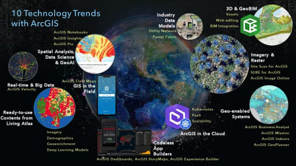

Introduction

Crop assessment using Artificial Intelligence (AI), Knowledge Learning (KL), and Geographic Information Systems (GIS) combines advanced technologies to enhance agricultural productivity and sustainability. This approach integrates data-driven insights to optimize farming practices and improve crop yields. Production estimation of major crops at the district and state levels is critical. In 2007, the Ministry of Agriculture launched the "FASAL" program based on knowledge gained through the CAPE project. Agriculture is the foundation of any country's economy. Monitoring crop growth and forecasting output regularly is essential for good agricultural management and policy-making.
AI, KL, GIS in Crop Assessment
AI algorithms analyze large datasets to predict crop growth patterns and optimize resource
allocation. KL techniques refine AI models over time, learning from historical data to improve
accuracy. GIS platforms provide spatial data analysis, mapping soil conditions, weather patterns,
and crop health metrics. GIS data has proven to be more cost effective, consistent, and faster than
traditional ground-based surveys.  High-resolution satellite data, Machine Learning, AI, and UAV-based
observation are increasingly enhancing crop production estimation. 
Benefits of Using AI, KL, and GIS
- Enhanced crop yield predictions
- Optimized resource management (water, fertilizer)
- Early detection of crop diseases and pests
- Precision farming practices
- Environmental sustainability
Use Cases
1. Precision Agriculture

Using AI and GIS for precise application of inputs based on soil and crop data. Crop mapping, planting area statistics, and growth status monitoring ensure effective agricultural management. Remote sensing (RS) data provides real-time crop growth information and supports accurate yield prediction.
2. Crop Health Monitoring

AI-driven analysis of satellite imagery and GIS mapping monitors crop health indicators efficiently. High-resolution satellite data and UAV observations provide more cost-effective and timely information than traditional ground surveys.
3. Yield Prediction

Historical data and machine learning algorithms predict crop yields accurately. Yield estimation is crucial for national planning, food security, pricing agricultural commodities, and supply chain decisions.